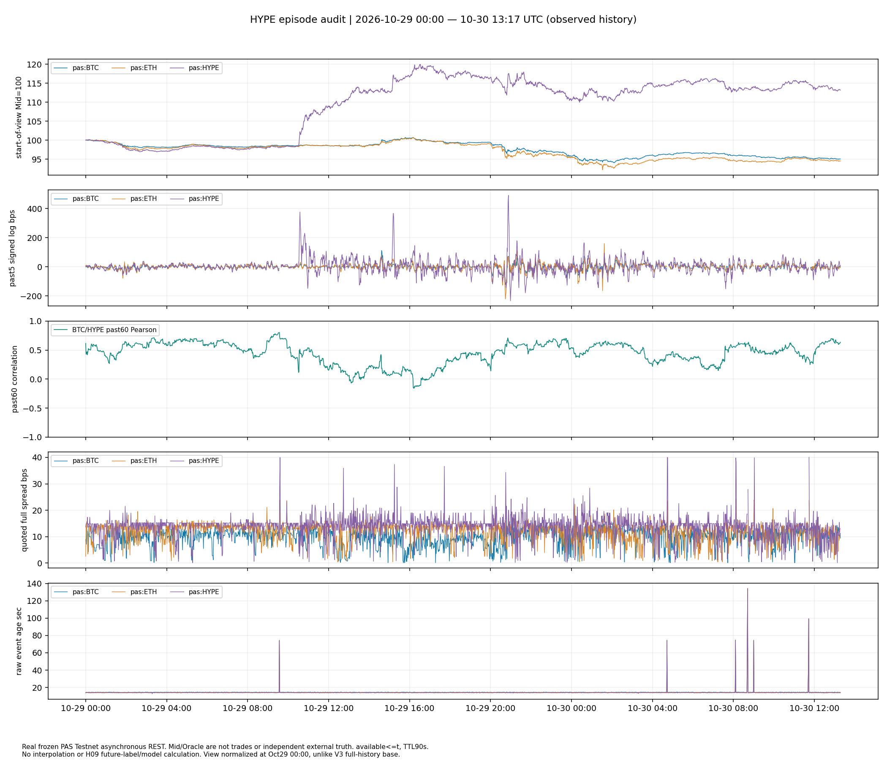

NO_INCREMENTAL_EVIDENCE · 固定5→15分钟规格，已见历史否证。A末段MSE/MAE变差，B同样未通过。停止；未计算交易收益。
旧PAS Testnet公共行情 · 2026-10-29 00:00—10-30 13:17 UTC。图按区间起点=100，A保留新报价零收益，无填充；异步REST不是同步成交。新数据仅封存，不在此页。
完整报告 · 冻结协议 · 逐点预测 · 逐事件 · Chrome V3实际截图

此页是静态研究交接页；原V3交互Dashboard维持原状。Oracle来自同一PAS体系，不是独立外部真值。实际费用与成交未知。全部已见历史不能称作干净OOS。